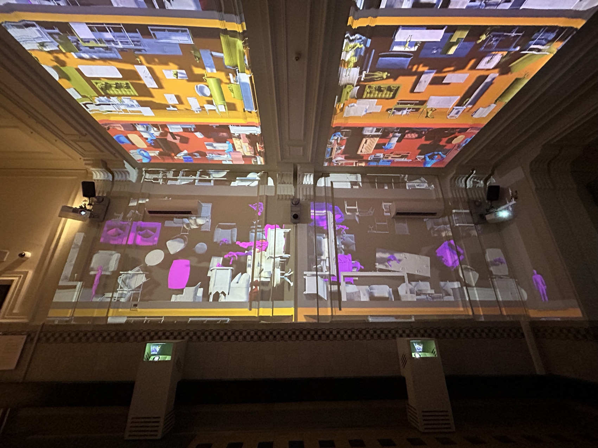
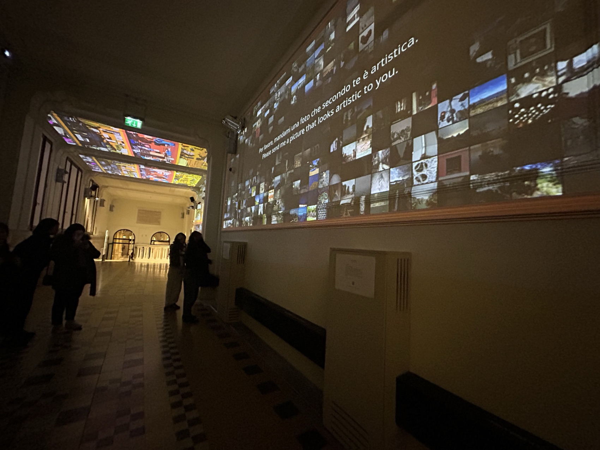
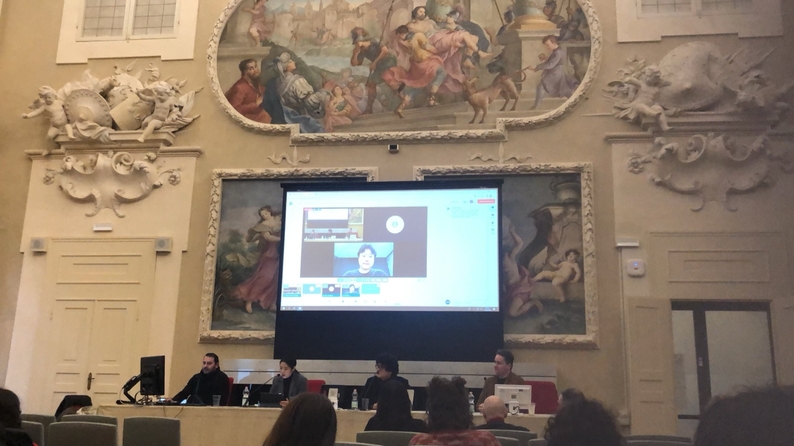
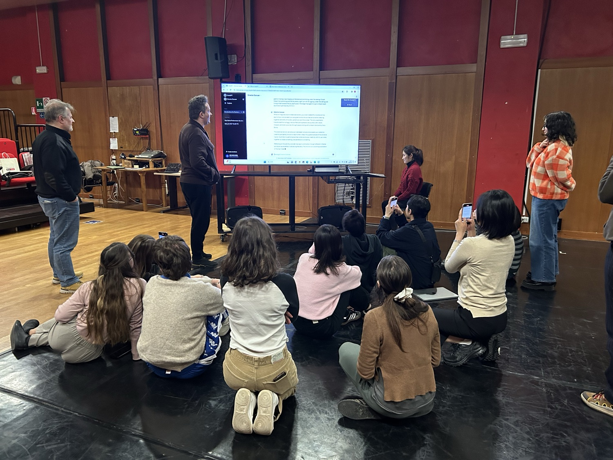
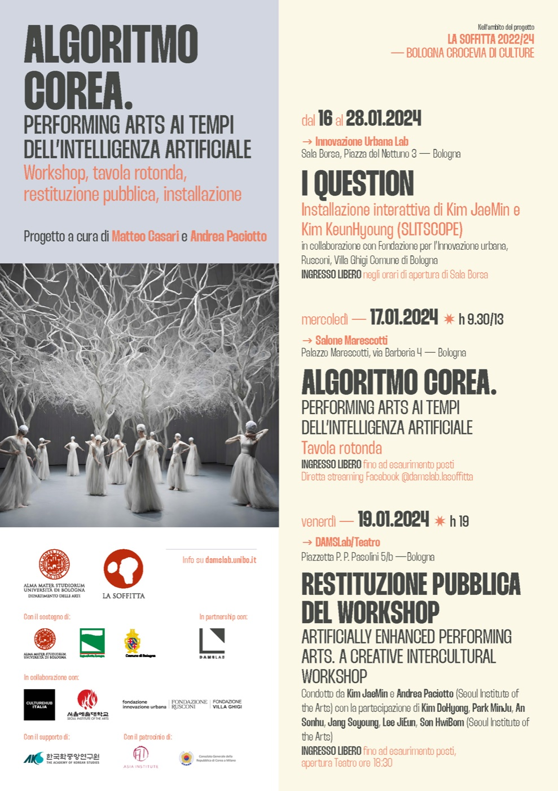

Exhibition — 2024
ALGORITMO COREA알고리트모 코레아 · Bologna · Slitscope
‘알고리즘 한국’ — 볼로냐의 역사적 공간에 한국의 AI 미디어아트를 펼친 전시·워크숍·컨퍼런스의 교류 프로젝트.
‘Algorithm Korea’ — an exchange of exhibition, workshop and conference, unfolding Korean AI media art inside Bologna’s historic spaces.
ALGORITMO COREA는 볼로냐대학교와 서울예술대학교의 국제 협력으로 열린 프로젝트로, 마테오 카사리·안드레아 파치오토의 기획 아래 전시·라운드테이블·워크숍 공개 발표가 이어졌습니다. 살라보르사의 인노바치오네 우르바나 랩에서는 슬릿스코프(김제민·김근형)의 인터랙티브 설치 ‘I Question’이 열리고, 프레스코 천장의 홀 벽면 가득 ‘Ludenstopia’가 투사되었습니다 — 공간의 역사적 함의를 모르는 AI가 상상한 유희적 공간이, 수백 년의 역사가 새겨진 유럽의 홀 위에 겹쳐지는 순간입니다.
1월 17일 살로네 마레스코티에서는 라운드테이블 ‘ALGORITMO COREA — 인공지능 시대의 공연예술’이, 18일에는 컨퍼런스 발표 ‘Artistic Coevolution of AI’가 열렸고, 한 주간의 AI 워크숍 — ‘Artificially Enhanced Performing Arts: A Creative Intercultural Workshop’ — 에서는 김제민과 안드레아 파올루치의 진행으로 서울예대 학생들과 볼로냐의 참여자들이 함께 작업해 1월 19일 산루이지 테아트로에서 공개 발표했습니다.
ALGORITMO COREA grew from the international collaboration of the University of Bologna and Seoul Institute of the Arts, curated by Matteo Casari and Andrea Paciotto — an exhibition, a round table, and the public restitution of a workshop. At the Innovazione Urbana Lab in Salaborsa, Slitscope’s interactive installation I Question met its audience, while Ludenstopia was projected across the walls and frescoed ceiling of the historic hall — a playful space imagined by an AI ignorant of history, overlaid on a hall inscribed with centuries of it. On 17 January the round table ‘Performing Arts in the Age of AI’ convened at Salone Marescotti; on the 18th came the conference talk ‘Artistic Coevolution of AI’; and the week-long workshop — ‘Artificially Enhanced Performing Arts: A Creative Intercultural Workshop,’ led by Kim JaeMin and Andrea Paolucci with SeoulArts students and Bolognese participants — closed with a public presentation at the Teatro San Luigi on the 19th.
- 작가
- Artists
- 슬릿스코프 (김제민 · 김근형)
- Slitscope (Kim JaeMin · Kim KeunHyoung)
- 기획
- Curators
- Matteo Casari · Andrea Paciotto
- 주최
- Hosts
- 볼로냐대학교 · 서울예술대학교 · Fondazione Innovazione Urbana
- University of Bologna · Seoul Institute of the Arts · Fondazione Innovazione Urbana
- 출품작
- Works
- I Question · Ludenstopia
- 키워드
- Keywords
- Korea–Italy exchange · AI workshop · projection · coevolution
기록 — 볼로냐, 2024. 1.
Record — Bologna, Jan 2024



